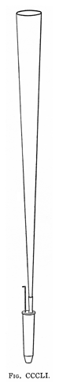
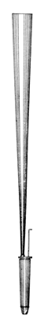

This entry is still under construction. The next time you visit, check the Revision History to see what's been added. A generic term for a fairly wide variety of reed stops. Usually found at 8' pitch, occasionally 16' in the pedal. See also Tromba. On some (orchestral) instruments, the name may be given to what should more properly be called Orchestral Trumpet. Tonal AttributesComes in a wide variety of dynamics and brightness. One builder's gentle Trumpet may be another builder's assertive Oboe.ConstructionFull-length resonators. The bass octave of a 16' stop may have half-length resonators. The illustrations are Audsley's.UsageIn its common forms, the Trumpet is usually a versatile stop, usable either as a solo stop or in chorus with principals, mixtures, and/or other chorus reeds. If an organ has only one manual reed stop, it is often a Trumpet, and usually on the Swell. Likewise, if a larger organ contains two different reed stops of the same type, it is likely to be a Trumpet.VariantsExamplesAny organ with more than two dozen ranks is nearly certain to have one. No examples are known of Tarantantara. Sound ClipsSee the Sound Files appendix for general information.
BibliographyAdlung[1]: §176 Posaune, §202 Tromba. Audsley[1]: Trumpet. Audsley[2]: I.XIII Trumpet; II.XXXVIII Trumpet. Bedos[1]: § 188-193, 198, 267-278, 967. Bonavia-Hunt[1]: Trompette, Trumpet. Douglass[1]: 85, 89-91, 96-97, 100-101, 107-108, 111-113. Grove[1]: Clarin, Trommet. Hopkins & Rimbault[1]: § 641, 820. Irwin[1]: Trompette, Trumpet. Locher[1]: Trumpet. Maclean[1]: Trompette, Trumpet. Skinner[1]: 54, 60; XII French Trumpet, Trompette, Trumpet. Strony[1]: Trumpet. Sumner[1]: Trompette, Trumpet. Wedgwood[1]: Tarantantara; Trumpet. Williams[1]: Glossary: Trommet.
|

 |
{kind=link}
{kind=link}